Richieste (RDP)
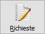
Il piano di produzione viene elaborato a fronte di
richiesta di produzione (RDP) che contengono al loro interno le informazioni
di ciò che deve essere prodotto; le RDP possono avere diverse origini:
Da
ordine cliente: la RDP viene generata da ordine cliente, al momento
in cui si preme il pulsante Esegui elaborando tutti gli ordini
aperti dalla data di inizio produzione presente in configurazione
fino alla data di consegna presente nei limiti video, per essere
elaborati gli ordini devono essere assegnati al'unità produttiva
su cui si sta operando; questa assegnazione viene effettuata in
automatico al salvataggio dell'ordine cliente utilizzando le regole di instradamento. La RDP contiene
i dati necessari per la produzione. La RDP è generata sul magazzino
di spedizione indicato sull’ordine cliente e la data di produzione
è uguale alla data di consegna a cliente diminuita degli eventuali
giorni di consegna gestiti tramite la tabella Tempi
di consegna (basati sul cliente o sulla zona di consegna del
cliente); i calcoli sulla data tengono conto del calendario aziendale
attivo. La RDP da ordine cliente viene nettificata in fase di
generazione piano considerando
le eventuali disponibilità di magazzino, a meno che sulla RDP
non sia stata spuntata la casella “Forza produzione” per cui l’ODP
viene creato per la quantità richiesta anche in presenza di disponibilità
utilizzabili.
Da
reintegro scorta: la RDP viene generata dalla funzione Reintegri.
Manuale:
la RDP viene inserita manualmente indicando i dati necessari per
la produzione; l'inserimento, variazione o cancellazione di una
RDP manuale invalida il piano di produzione attuale che dovrà
essere rigenerato; si può entrare direttamente in stato di inserimento
utilizzando l'apposito bottone "Inserisci".
Da
correttivi: la RDP da correttivi possono essere generate al termine
della fase di verifica piano quando
si verificano situazioni di disponibilità non soddisfatta.
Da
altra unità produttiva: nel caso di gestione di più unità produttive
in cui una unità produttiva produce semilavorati utilizzati da
un’altra unità produttiva. Per attivare la funzionalità è necessario
impostare “Unità produttive collegate”; nella funzione di generazione
RDA/RLE si aggiunge una nuova funzione di generazione RDP che
provvede a creare la RDP per i componenti di tipo materia prima
che sono instradati da tabella su un’unità produttiva diversa
rispetto a quella del composto. Le RDP vengono eliminate e rigenerate
fino a che l’unità produttiva assegnataria non ha generato il
piano.
Oltre al limite di data per l'elaborazione degli ordini è possibile,
agendo sulle relative caselle, riattivare le RDP sospese, visualizzare
le RDP sospese ed escluse; per accedere alla modifica, analisi delle RDP
è necessario premere il tasto Esegui; le RDP saranno visibili fino all'avvenuta
pianificazione del relativo ODP, dopodiché non saranno più visualizzate
a meno che il relativo ODP non sia sottoposto ad un annullamento di pianificazione.
Se presente la gestione progetti sarà possibile specificare il progetto,
che sarà utilizzato come filtro per la generazione.
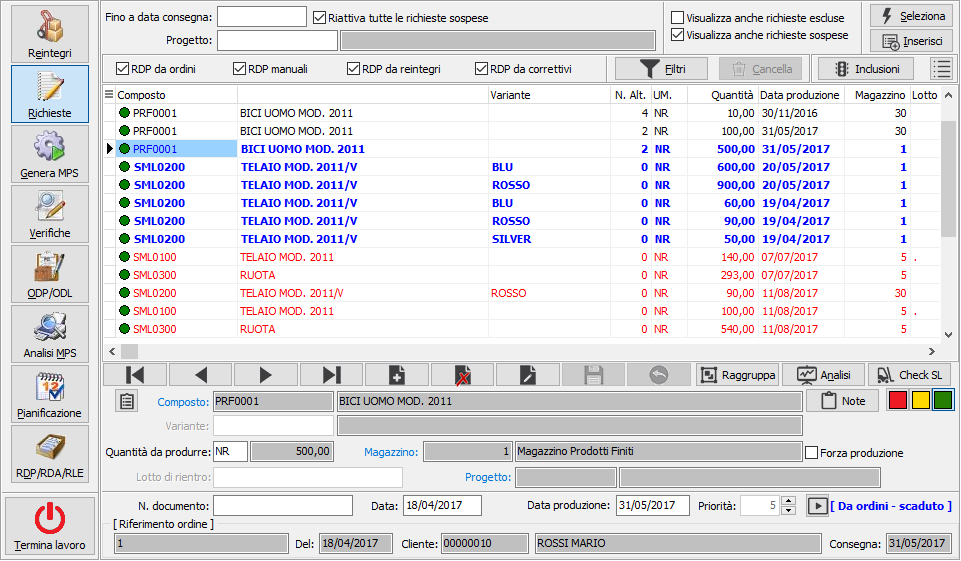
La finestra di gestione riporta in griglia le RDP presenti rappresentandole
in colori diversi in relazione all'origine; l'origine viene comunque mostrata
in basso a destra di fianco al livello di priorità: in blu le RDP da ordini,
se scadute rispetto alla data di sistema vengono evidenziate in grassetto,
in nero le RDP manuali, in marrone le RDP da reintegri ed in rosso le
RDP da correttivi.
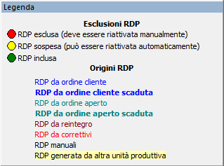
 Il pulsante
indicato, presente in alto, consente di mostrare o nascondere la legenda
relativa ai significati dello stato di esclusione e delle origini delle
RDP.
Il pulsante
indicato, presente in alto, consente di mostrare o nascondere la legenda
relativa ai significati dello stato di esclusione e delle origini delle
RDP.
Tramite i tre pulsanti colorati
è possibile modificare lo stato di esclusione della richiesta, cioè se
la richiesta deve essere presa in esame in fase di generazione del piano
di produzione; la richiesta può essere inclusa, sospesa o esclusa; le
richieste escluse non saranno visualizzate mai a meno che non si spunti
la casella "Visualizza anche richieste escluse" prima di premere
Esegui e potranno essere incluse di nuovo solo manualmente; le richieste
sospese vengono incluse nuovamente alla prossima elaborazione a meno che
non si tolga la spunta alla casella "Riattiva tutte le richieste
sospese". Il cambio di stato di una RDP invalida il piano di produzione
attuale che dovrà essere rigenerato.

 Se prevista la gestione delle alternative sarà presente
anche il pulsante mostrato a lato; premendolo si apre la finestra a destra
dove viene indicata in giallo l'alternativa attualmente utilizzata, di
default è la 0 (zero); in questa fase è possibile selezionare con il doppio
click del mouse la nuova scheda tecnica alternativa che sarà utilizzata
dalla generazione del piano di produzione. Premendo il tasto Salva la
modifica diventa definitiva. Il cambio di alternativa di una RDP invalida
il piano di produzione attuale che dovrà essere rigenerato.
Se prevista la gestione delle alternative sarà presente
anche il pulsante mostrato a lato; premendolo si apre la finestra a destra
dove viene indicata in giallo l'alternativa attualmente utilizzata, di
default è la 0 (zero); in questa fase è possibile selezionare con il doppio
click del mouse la nuova scheda tecnica alternativa che sarà utilizzata
dalla generazione del piano di produzione. Premendo il tasto Salva la
modifica diventa definitiva. Il cambio di alternativa di una RDP invalida
il piano di produzione attuale che dovrà essere rigenerato.
 Se prevista la gestione dei progetti ed è attivo
il parametro “Generazione MPS da RDP” presente nella configurazione “Piano
di produzione”, sarà presente il pulsante a lato che consente lanciare
la generazione del piano direttamente dalla gestione RDP per una singola
RDP o meglio per il progetto della RDP stessa; nel caso in cui si tratti
una RDP manuale senza progetto viene creato un nuovo progetto e assegnato
alla RDP stessa.
Se prevista la gestione dei progetti ed è attivo
il parametro “Generazione MPS da RDP” presente nella configurazione “Piano
di produzione”, sarà presente il pulsante a lato che consente lanciare
la generazione del piano direttamente dalla gestione RDP per una singola
RDP o meglio per il progetto della RDP stessa; nel caso in cui si tratti
una RDP manuale senza progetto viene creato un nuovo progetto e assegnato
alla RDP stessa.
La casella Forza produzione se spuntata, esclude la richiesta dalla
nettificazione in fase di generazione del piano ed indica che il composto
deve essere prodotto anche se fosse già presente e disponibile a magazzino.
La modifica a questa casella invalida il piano di produzione attuale che
dovrà essere rigenerato.
La priorità è modificabile (attraverso i pulsanti accanto al campo);
questo determina che a parità di data richiesta produzione saranno trattate
prima le RDP con priorità più alta.
Nella parte bassa è presente il riferimento all'ordine del cliente,
presente solo per le richieste che provengono da ordini.
Sopra la griglia è presente la barra dei filtri da cui è possibile impostare
quali RDP visualizzare in relazione all'origine spuntando o meno le caselle
presenti.
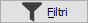
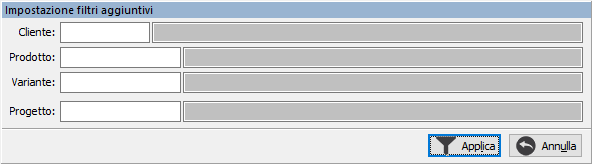
Utilizzando il pulsante "Filtri" è possibile
applicare un filtro aggiuntivo alla visualizzazione, per cliente, per
prodotto e se presenti i moduli anche per Variante e Progetto; premendo
il pulsante comparirà la finestra in cui specificare i filtri da applicare;
con il filtro applicato il pulsante cambia immagine e dicitura e consentendo
l'annullamento del filtro appena impostato. Il filtro agisce comunque
tenendo conto delle caselle relative all'origine.
Se
si selezionano solo RDP da reintegri e/o da correttivi si attiva il pulsante
"Cancella" che se premuto e risposto affermativamente alla richiesta
di conferma elimina definitivamente le RDP visualizzate.
Utilizzando il pulsante "Inclusioni" si
accede alla finestra da cui è possibile selezionare le richieste visualizzate
nella finestra principale e definire, per gruppi, se includere escludere
o sospendere le richieste;; è necessario selezionare, con il doppio clic
del mouse o tramite il menù contestuale le righe su cui operare, premendo
i pulsanti in basso le righe selezionate assumeranno lo stato indicato
dal pulsante premuto solo premendo il pulsante Salva le modifiche
saranno rese effettive.
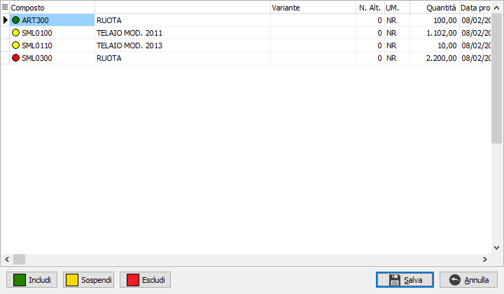
Utilizzando il pulsante "Raggruppa" è possibile
effettuare il raggruppamento delle richieste di produzione; questa operazione
consente di assegnare a tutte le RDP che vengono selezionate la stessa
data di richiesta produzione in modo che la successiva generazione del
piano generi un solo ODP per il totale della quantità richiesta in tale
data. Nella finestra vengono riportate, nella prima griglia, le RDP attive
raggruppate per prodotto, variante e progetto (in relazione alla gestione
attiva) e selezionando un elemento compaiono, nella griglia inferiore
le RDP analitiche; in basso è presente un casella di spunta per mostrare
solo le RDP che non hanno ancora generato ODP.
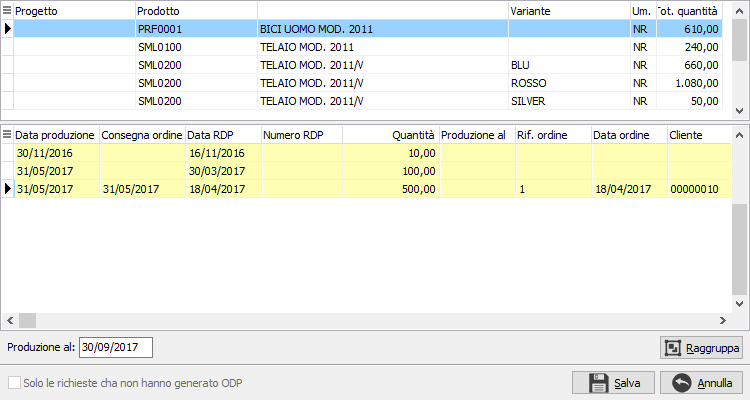
 Da questa griglia è possibile
selezionare le RDP da raggruppare con il doppio clic del mouse oppure
utilizzando il menù associato al tasto destro del mouse tramite cui è
possibile anche annullare la selezione a tutte le richieste, selezionare
tutte le richieste oppure annullare un raggruppamento già effettuato;
nella parte bassa, sotto la griglia, è presente la nuova data di produzione
che può essere anche inserita manualmente (di base viene proposta
la data minore fra tutte le RDP selezionate) ed il pulsante Raggruppa.
Con le richieste selezionate se si preme il pulsante Raggruppa, viene
effettuato il raggruppamento e le richieste appaiono come nell'esempio:
Da questa griglia è possibile
selezionare le RDP da raggruppare con il doppio clic del mouse oppure
utilizzando il menù associato al tasto destro del mouse tramite cui è
possibile anche annullare la selezione a tutte le richieste, selezionare
tutte le richieste oppure annullare un raggruppamento già effettuato;
nella parte bassa, sotto la griglia, è presente la nuova data di produzione
che può essere anche inserita manualmente (di base viene proposta
la data minore fra tutte le RDP selezionate) ed il pulsante Raggruppa.
Con le richieste selezionate se si preme il pulsante Raggruppa, viene
effettuato il raggruppamento e le richieste appaiono come nell'esempio:
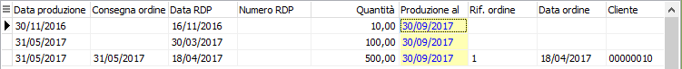
Tutte le operazioni effettuate all'interno di questa finestra saranno
salvate solo se si preme il pulsante Salva in basso, se si esce dalla
finestra premendo Annulla tutte le modifiche effettuate andranno perse;
analogamente se si esce premendo Salva sarà effettuato il raggruppamento
delle richieste come previsto. Una volta
effettuato, il raggruppamento, non potrà essere annullato.
Il pulsante "Analisi" presente sul navigatore
consente di effettuare una veloce analisi delle RDP attive che ancora
non hanno dato origine a nessun ODP, se poi si spunta la casella in basso
a sinistra saranno incluse anche le richieste che hanno generato ODP;
la finestra di analisi è suddivisa in tre zone: la parte in alto a sinistra
riporta l'elenco delle date di richiesta produzione relative alle richieste
in esame, a destra le richieste raggruppate per prodotto (e variante se
gestita), la parte in basso riporta le richieste raggruppate per prodotto
(eventuale variante) e data richiesta produzione. Selezionando una data
le altre griglie cambiano di conseguenza, nella parte bassa le righe in
grigio sono relative ad altre date e non a quella selezionata.
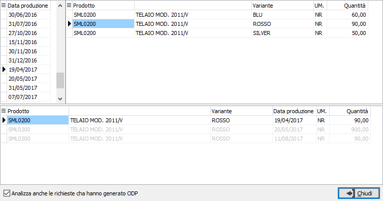
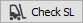
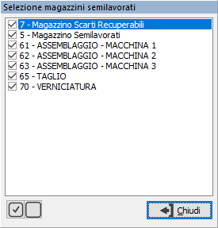
Il
pulsante "Check SL" presente sul navigatore consente di trasferire
eventuali giacenze di semilavorati già presenti a magazzino per coprire
eventuali richieste di produzione di semilavorati. La funzione controlla
se ci sono richieste di semilavorati per i quali esiste una giacenza e
permette di generare un movimento di trasferimento del semilavorato sul
magazzino di produzione in modo da evitare la produzione del semilavorato
stesso. Nella parte superiore della finestra vengono mostrate le RDP relative
ai semilavorati, è possibile visualizzare solo le RDP che non hanno già
generato ODP spuntando la relativa casella. Nella parte inferiore le giacenze
dei prodotti nei magazzini semilavorati; è possibile considerare tutti
i magazzini semilavorati mettendo la spunta sulla relativa casella, se
si toglie la spunta è possibile selezionare i magazzini in cui cercare
le giacenze tramite un'apposita finestra. 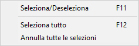
Con
il doppio clic del mouse o tramite il menù contestuale del tasto destro
del mouse nella griglia superiore è possibile selezionare/deselezionare
le richieste; in caso di selezione la quantità della RDP selezionata andrà
a decrementare l'esistenza del prodotto nella parte inferiore, se si deseleziona
l'esistenza sarà risommata; le RDP completamente coperte vengono evidenziate
in colore differente rispetto a quelle parzialmente coperte. Prima di
poter effettuare la generazione è necessario inserire la causale di magazzino
di trasferimento.
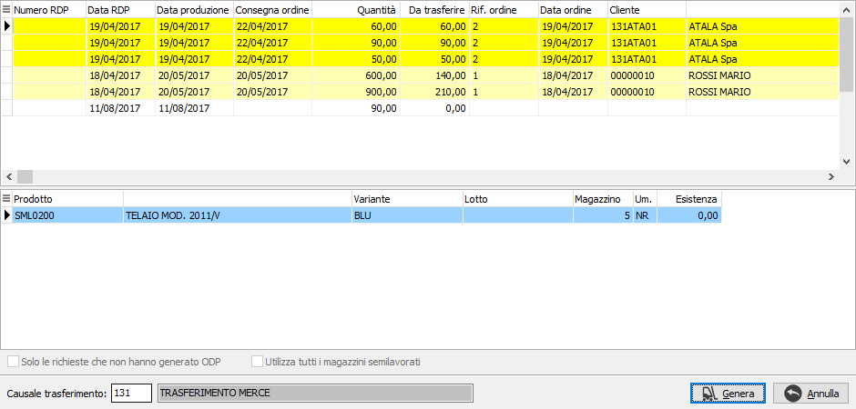
 Se attiva la
gestione matricole sarà possibile accedere dalla singola RDP alla finestra
delle matricole tramite il pulsante sul rigo.
Se attiva la
gestione matricole sarà possibile accedere dalla singola RDP alla finestra
delle matricole tramite il pulsante sul rigo.